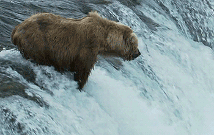

Niedźwiedź brunatny jest ogromnym ssakiem zamieszkującym Azję, Europę oraz Amerykę Północną. Jak sama nazwa mówi jest on w kolorze brunatnym.Żywi się on mięsem ale także owocami i miodem. Jest pod ścisłą ochroną ale nie grozi mu wyginięcie. Żyje aż do 50 lat. Bardzo często można zobaczyć go w zoo.
W okresie od listopada do lutego niedźwiedź zapada w sen zimowy. Zamieszkuje wtedy tak zwaną gawre.